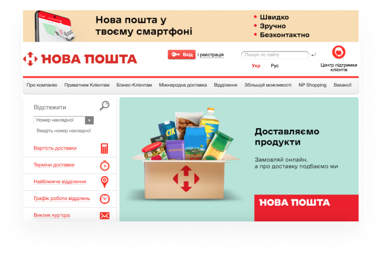
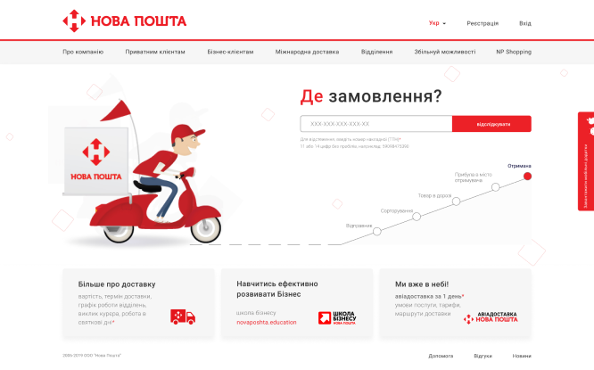

Nova Poshta
Redesign
- illistrations
- ux/ui design
Maybe you don't know what is it...
Nova Poshta - is a private Ukrainian postal and courier company that provides express delivery of documents, freight and parcels for individuals and businesses.
Current page
New design
What needed to be fixed
Issue 1. The website design is outdated is overloaded with red.
Fix. Updated and modern design. Giving the site an original style.
Issue 2. Inconvenience of use. The site is full of irrelevant information. A lot of additional information that can be hidden in a separate section of the menu.
Fix. I got rid of unnecessary content, made the navigation of the site convenient and understandable.
Issue 3. Important elements, such as: the search for the parcel and the status of the goods should be in the user's field of vision - this is exactly what the user is interestedin on the sites of the delivery service.
Fix. I didn't want to overload the site, so on the main page, the user can check the order status, find the desired branch, leave or read a review in one click.
nextwork